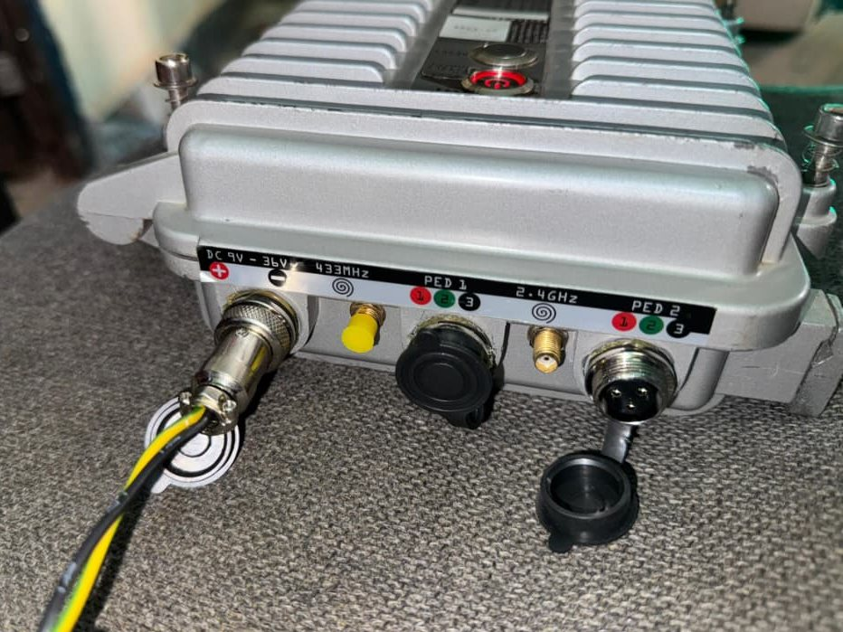

👋 Hi, I'm Phil!
Critical Power & Mission-Critical Operations Engineer · 12+ years
This portfolio documents systems I've designed, deployed, and operated — from Abuja's citywide traffic control room to estate-scale embedded power-management products.
Open to roles in critical power, embedded systems, and intelligent infrastructure — remote, on-site, or relocation.
About Me
Critical Power & Mission-Critical Operations Engineer || COREN R56955 || NSE 50295 || Embedded Hardware Specialist
I build critical electrical infrastructure that stays running — at city, factory, estate, and product scale. Across 12+ years with the Transportation Secretariat of the Federal Capital Territory Administration (FCTA), CyberFlux, KEGA, and Urban Motion, I've developed the operational discipline behind high-availability systems: layered power redundancy, predictive maintenance, embedded power monitoring, board-level hardware troubleshooting, and direct OEM coordination with Cummins and Studer Innotec. B.Eng. Electrical & Electronics Engineering, University of Ilorin.
I co-designed and operate the Abuja Integrated Intelligent Transportation Information System (AIITIS) — a continuously-operated traffic platform spanning 100+ signalized intersections — and design embedded power-management products for estate-scale energy systems. Hands-on with UPS/ATS, Cummins PowerCommand (Modbus RTU), IEC 62053-21 metering, solar/battery hybrid backup, and BMS/EPMS/SCADA supervision; I cut MTTR from 48h to under 8h at >99% availability.
experience
intersections
availability
My Skills
Technical SkillsCritical Power Systems
Power continuity & distributionUPS / ATS architectures
Generator control (Cummins PowerCommand)
Three-phase metering (IEC 62053-21)
Solar / battery hybrid backup
Switchgear & relay coordination
Power factor & load management
Monitoring, BMS & EPMS
Telemetry, dashboards & supervisionModbus RTU / RS-485
GSM / Wi-Fi telemetry
Real-time monitoring dashboards
Automated fault detection & alarming
SCADA-style supervision
EPMS register mapping
Mission-Critical Operations
24/7 control-room discipline24/7 control-room operations
MTTR optimisation
Predictive & preventive maintenance
Incident response & root-cause analysis
Change management
Operational documentation
Embedded Hardware & Firmware
PCB design through field deploymentKiCad
Altium
PCB fabrication & assembly (THT / SMT)
STM32
ESP-IDF / STM32CubeMX
C / C++ / Python / Node.js
JLCPCB DFM / DFT
Test & Instrumentation
Measurement & board-level repairOscilloscope
Logic analyzer
Power analyzer
Thermal imaging
Multimeters
Board-level troubleshooting & rework
Cross-functional team leadership || Vendor & OEM coordination || Field-deployment problem-solving
Technical mentoring & training || Stakeholder communication across government, contractors, and manufacturers
Timeline
A Blended Journey of activities from Learning and WorkProfessional Registrations
COREN Registered Engineer (R56955) Council for the Regulation of Engineering in Nigeria NSE Member (50295) Nigerian Society of EngineersTraffic Signal Light Operation and Maintenance Training (Abuja)
Traffic Engineering Training FCTA and Polysolar Technologies (Beijing) Co., Ltd. Wireless signal analysis (Tektronix) and embedded controlBachelor of Engineering (BEng.)
Electrical & Electronics Engineering University of Ilorin, NigeriaSenior Electrical Engineer
Transportation Secretariat, Federal Capital Territory AdministrationNo. 1, Kapital Road, Area 11 Garki, Abuja.
AIITIS Platform — aiitis.fcta.gov.ng Critical Power & Mission-Critical OperationsCitywide control room operations across 100+ signalized intersections; UPS / ATS / generator / solar power switching; cut MTTR from 48h to under 8h with preventive maintenance and rapid field-swap protocols; cross-functional team of 8.
Role ProgressionPromoted Senior Electrical Engineer (Jul 2021); previously Electrical Engineer I (2019–2021), Resident Engineer / Project Staff (2014–2019).
Embedded Systems & Power Management Engineer
(Independent Contractor)
CyberFlux Nigeria Ltd.
No. 55, Ebitu Ukiwe Street, Jabi, Abuja.
www.cyberflux.tech SmartSAV Energy Management Platform (v1.0 → v2.0)End-to-end embedded power-management products for Cosgrove estates: ~160 LoRa-based units with custom TDMA scheduling and 99.2% uplink reliability over 2 km (v1.0); ~40 GSM / Wi-Fi systems with on-board STM32 / ESP32 edge logic and integrated BAS / load control (v2.0). Modbus RS-485 integration with three-phase meters (JSY-MK-323, IEC 62053-21 Class 1) and Cummins PowerCommand monitoring.
Embedded Systems & Maintenance Engineer
(Independent Contractor)
Urban Motion Nigeria Ltd.
Suite CA10, SparkLight Mall, Apo, Abuja.
Wireless & wired control systemsLed full lifecycle development from prototype through volume production, including hardware bring-up, debug, and rework. Engineered solar-power retrofits for critical sites with MPPT controller selection and matching, battery banks, and protection devices.
Consultant Maintenance Engineer
KEGA Integrated Networks Ltd.Plot 167/168 Gateway Street Nyanya Ext., F.H.A, Abuja.
Factory MROPrimary ownership of factory MRO for high-throughput film-extrusion and bubble-wrap manufacturing: motors, precision heating / thermal-control systems, extruders, and electrical distribution. Sustained 85% machinery capacity utilisation with zero unplanned production halts during critical runs.
Traffic Data Collection Engineer
(Post-NYSC, Independent)
FCTA / TektronPlus Engineering
No. 1, Kapital Road, Area 11 Garki, Abuja.
International OEM CollaborationFirst independent engagement following National Youth Service. Collaborated directly with the UK manufacturer of the field traffic-data collection devices, running remote diagnostic and troubleshooting sessions over TeamViewer with the OEM team.
Power Electronics & Data PipelineDesigned and deployed a 6V VRLA charging subsystem for the field devices; owned the deployment's data collection, integrity, and analysis pipeline.
Selected Work
Selected work across critical infrastructure operations and embedded systems

AIITIS — Abuja Integrated Intelligent Transportation Information System
What it is. AIITIS is the FCT's integrated platform for traffic management and transport administration. Its public face, at aiitis.fcta.gov.ng, handles operator licensing, payments, and vehicle verification for passenger, parking, and goods-transport providers — the layer any visitor can see. Behind it sits the operational core I co-designed and run.
My role. I operate the continuously-staffed control room overseeing 100+ signalized intersections and distributed field infrastructure across the Federal Capital Territory, and lead a cross-functional team of 8 across maintenance, upgrades, and new installations — guaranteed power switching across UPS / ATS, generator, and solar sources, alarm triage, and shift-based operational continuity.
Outcomes. Established the preventive-maintenance and rapid field-swap protocols that cut MTTR from 48h to under 8h while sustaining >99% availability; solar/battery backup at critical sites reduced grid-outage downtime by ~40%. The platform is integrated with Galaxy Backbone for data protection and backup per government standard.
Stack: UPS/ATS architectures, Cummins PowerCommand via Modbus RTU, IEC 62053-21 metering, solar/battery hybrid backup, SCADA-style supervision, automated event logging.



Indigenous Wireless Traffic Light Controller (2017–2025)
The problem. The FCT's signalized intersections relied on imported controllers with hard-coded wireless configurations — prone to RF interference and impossible to reconfigure after installation, so every fault meant another import cycle.
My role. As lead R&D and design engineer on Urban Motion Nigeria Ltd.'s wireless traffic controller project, I took the FCT's first indigenous wireless traffic light controller from research through to a productized device: the QT-TSLC v1.1, a dual-band RF (433 MHz + 2.4 GHz) and Wi-Fi controller branded Quadrum Technologies, with flexible pre- and post-installation configuration, remote access, and a wide 9–36 V DC input. It is operated through the monitoring portal at traffic-signal.quadrumtechnologies.com.
The deployment arc. Initial Abuja deployment in 2017, extended to Kebbi State (2022), Lagos State (2023), and Bauchi State (2025) — four jurisdictions, four procurement processes, eight years of sustained field operation, aligned with the FCT Urban Traffic Control Master Plan.
Stack: Dual-band RF (433 MHz + 2.4 GHz), Wi-Fi, embedded firmware, field-configurable parameters, die-cast weatherproof enclosure with IP-rated connectorisation, 9–36 V DC.
Recognitions
Commendations, awards, and adoptions from the institutions involvedPermanent Secretary's Commendation — First FCTA Traffic-Light Maintenance Team
Issued 2016 by the Office of the Permanent Secretary, Transportation Secretariat, FCTA. Recognised the establishment and leadership of the Department's first traffic-light maintenance team and the successful direct-labor installation of the FCTA's first wireless signalized intersection. The commendation became the basis for the team's permanent appointments in 2019.
Verbal Commendation & Cash Prize — AC-Wired Traffic Signal Controller Reverse Engineering
Received in 2014 from the Transportation Secretariat, FCTA. Recognised the board-level reverse engineering of failing imported AC-wired traffic signal controllers and the rollout of a maintainable equivalent across multiple FCT intersections, breaking a recurring import-spend cycle.